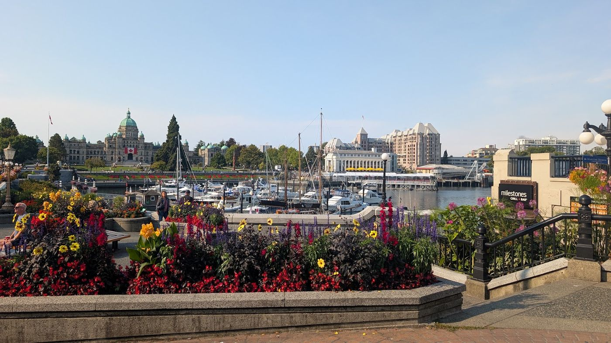
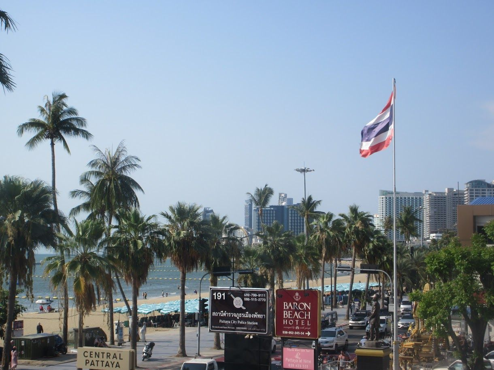
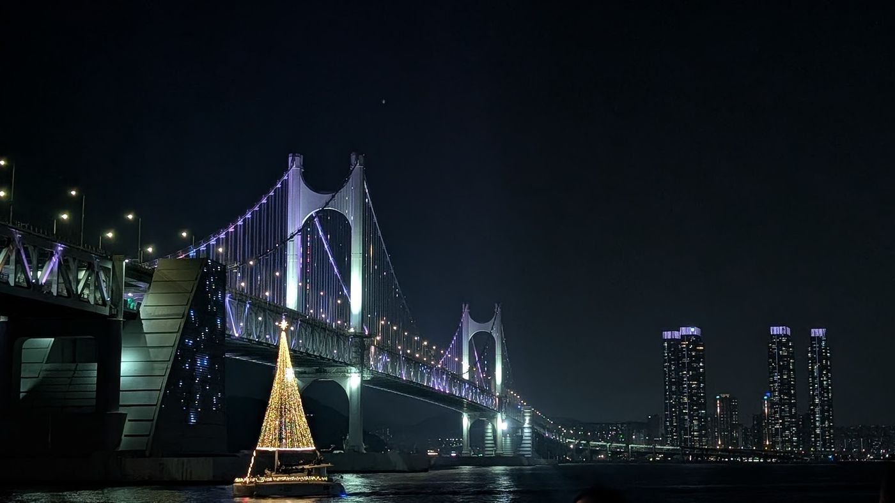
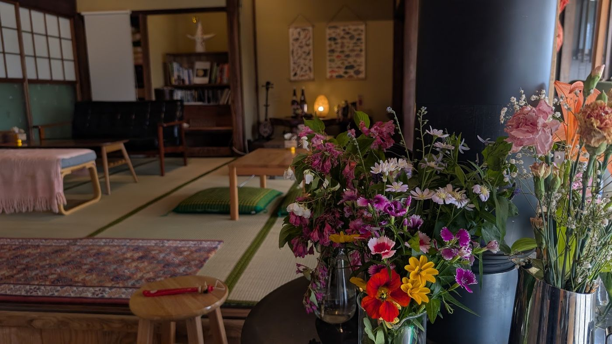
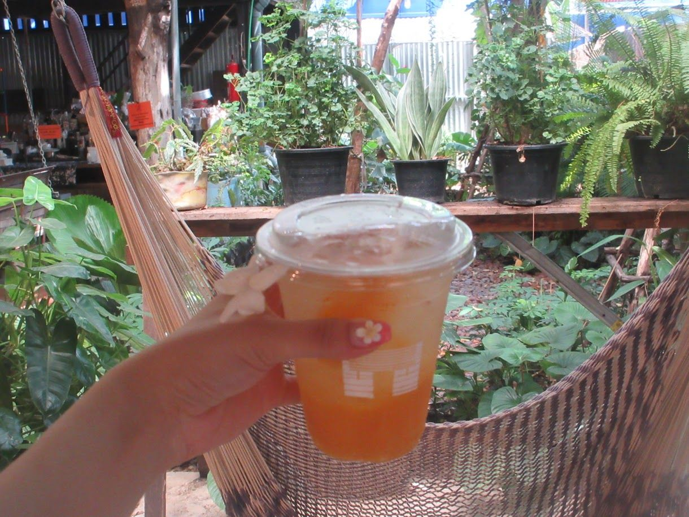

01
おいしいお店探し
ご飯とお酒がおいしいお店を探すのが好きです。
PROFILE
熊本学園大学 外国語学部 英米学科
熊本のカフェを広めたい！
KICQSで、AIを使ったサイトやアプリの作り方を勉強中✏️

01 — ABOUT
はじめまして。熊本学園大学外国語学部英米学科の潮﨑小百合（しおさき さゆり）と申します。ふだんは資格の勉強をしています。
KICQSを知ったのは、先日参加したイベントがきっかけです。AIについて実践的に学びたいと思い、参加を決めました。
02 — FAVORITES
01
ご飯とお酒がおいしいお店を探すのが好きです。
02
カフェ巡りが趣味で、コーヒーも大好きです。
03
国内旅行も、海外旅行も好きです。
いまハマっていること
最近は、芋を使った季節限定のスイーツを食べ歩くことにハマっています。




おすすめのお店があれば、ぜひ教えてください。
03 — CHALLENGE
挑戦したこと
一人で海外旅行に挑戦しました。自分で考えて、自分で決めて動く経験になりました。
いま挑戦していること
KICQSに参加し、AIを使ったサイトやアプリの作り方を実践的に学んでいます。
目標
最終的には、趣味のお店巡りやカフェに関するサイトを、自分で作れるようになることが目標です。